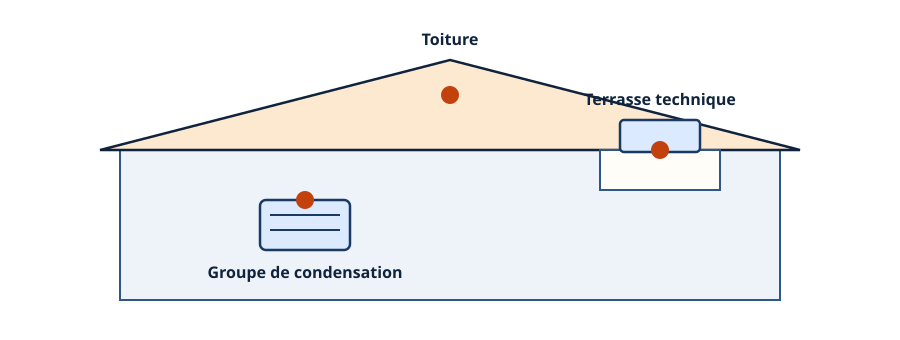
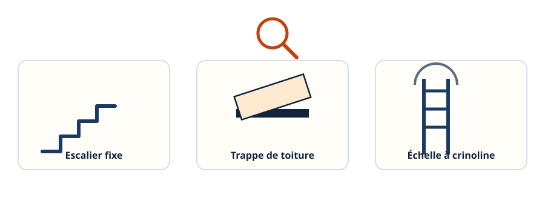
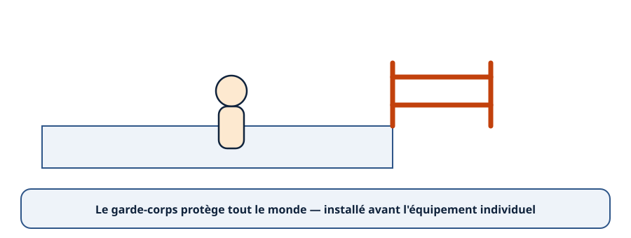
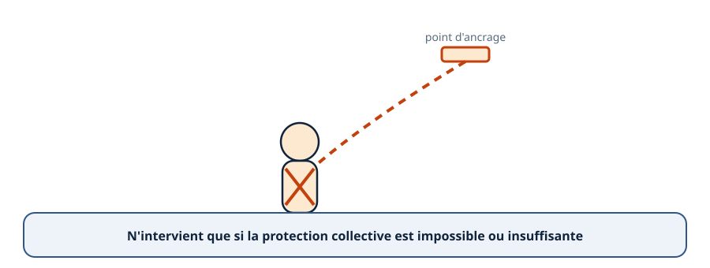
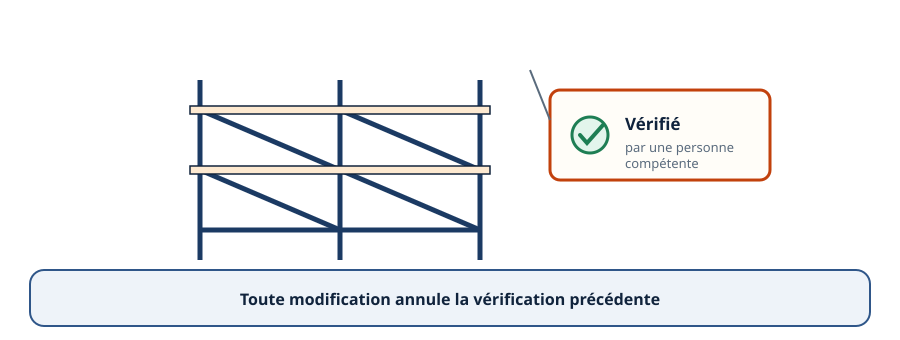
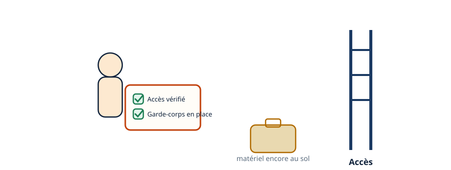
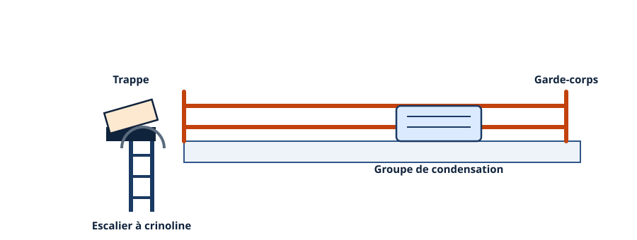
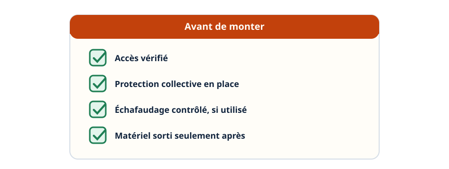

En hauteur — l'accès et la protection avant l'équipement
Mini-station commentée · 8 écrans et 4 questions · environ 10 minutes
Objectif
À la fin de la station, vous savez pourquoi le travail en hauteur est une composante ordinaire du métier frigoriste, dans quel ordre penser les protections — l'accès, le collectif, puis l'individuel —, ce qu'implique un échafaudage vérifié, et le réflexe à avoir avant de monter.
Chaque écran peut être expliqué à voix haute : le bouton « Écouter » commente ce que vous voyez. Rien n'est dit qui ne soit aussi écrit.
1 / 12
Écran 1 sur 8
Un risque du quotidien, pas de l'exceptionnel
Un frigoriste passe une part réelle de son temps en hauteur : accès aux groupes de condensation, toitures, terrasses techniques. Ce n'est pas un risque occasionnel, c'est une composante ordinaire du métier.

Trois lieux d'intervention courants, pas des exceptions.
Écran 2 sur 8
L'accès, avant l'équipement
Avant de penser à l'équipement de protection, il faut penser à la voie d'accès elle-même : un escalier fixe, une trappe, une échelle à crinoline. Un accès dégradé est déjà un risque, avant même d'arriver en hauteur.

L'état de l'accès se vérifie avant de l'emprunter.
Écran 3 sur 8
Protection collective d'abord
La protection collective profite à tout le monde en même temps : garde-corps, garde-corps périphérique de toiture, filet. Elle se met en place avant de penser à l'équipement individuel.

Le garde-corps profite à toute personne présente, pas à une seule.
Écran 4 sur 8
L'équipement individuel, seulement si le collectif ne suffit pas
Harnais, longe, point d'ancrage vérifié : cet équipement individuel n'intervient que lorsque la protection collective est impossible ou insuffisante.

Le dernier recours, pas le premier réflexe.
Écran 5 sur 8
L'échafaudage : monté, vérifié, jamais modifié sans revérification
Un échafaudage se monte selon la notice du fabricant. Il se fait vérifier par une personne compétente avant l'usage. Une fois modifié, il doit être revérifié avant de remonter dessus.

L'étiquette de contrôle est la preuve, pas un détail.
Écran 6 sur 8
Le réflexe : vérifier avant de sortir le matériel
Avant de sortir le matériel d'intervention, le réflexe est de vérifier l'état de l'accès et la présence des protections collectives — pas après être monté.

Vérifier avant de monter, pas une fois en haut.
Écran 7 sur 8
Exemple : un groupe de condensation en terrasse technique
Avant une intervention sur un groupe de condensation posé en terrasse technique, accessible par une trappe et un escalier à crinoline, le technicien vérifie l'accès et le garde-corps de la terrasse avant de sortir son matériel.

L'exemple complet : accès, garde-corps, puis matériel.
Écran 8 sur 8
Bilan et le réflexe
Le travail en hauteur est une composante ordinaire du métier, pas une exception.
L'accès se vérifie avant l'équipement.
La protection collective vient avant la protection individuelle.
L'échafaudage se vérifie avant usage et après toute modification.
Le réflexe : vérifier l'accès et les protections collectives avant de sortir le matériel.
Le réflexe : avant de monter, l'accès et le garde-corps sont-ils vérifiés ?

Vérifier avant de monter, chaque fois.
Question 1 sur 4
Le travail en hauteur dans le métier frigoriste est…
Rappel de l'écran 1 — trois lieux d'intervention courants.
Question 2 sur 4
Sur un toit, quelle protection s'installe en premier ?
Rappel de l'écran 3 — la protection collective avant l'individuelle.
Question 3 sur 4
Un échafaudage a été légèrement modifié depuis sa dernière vérification. Que doit faire le technicien ?
Rappel de l'écran 5 — vérifié avant usage, jamais après modification sans contrôle.
Question 4 sur 4
Avant d'intervenir sur le groupe de condensation de la terrasse technique, que vérifie le technicien ?
Rappel de l'écran 7 — l'accès et le garde-corps avant le matériel.
Les correspondances de la station
L'habilitation (sous-ligne Électrique) — la règle d'un côté, le geste protégé de l'autre.